1. Lecture Objectives
This lecture surveys representative CNN architectures—LeNet, AlexNet, VGG, GoogLeNet (Inception), and ResNet—and highlights the key design choices that enabled deeper and more accurate models (e.g., ReLU, dropout, normalization, inception modules, and residual connections). By the end, you should be able to compare these architectures at a high level and explain how their building blocks support efficient feature learning for image recognition.
2. Overview
Convolutional Neural Networks (CNNs) have evolved through several key breakthroughs in data, compute, and architecture design. Early work such as LeNet-5 (1998) demonstrated that neural networks could learn directly from raw pixel data, reducing reliance on hand-engineered features. The modern resurgence of CNNs began with AlexNet in 2012, which leveraged large-scale datasets (ImageNet), GPU acceleration, and the ReLU activation function to overcome optimization challenges such as vanishing gradients. This success sparked rapid progress, leading to deeper and more sophisticated architectures such as VGG, GoogLeNet (Inception), and ResNet. These models introduced ideas including very deep networks, multi-branch modules, normalization, and residual connections, dramatically improving accuracy and efficiency on large-scale image recognition tasks (Lecun et al. 1998; Krizhevsky, Sutskever, and Hinton 2012; Simonyan and Zisserman 2015; Szegedy et al. 2014; He et al. 2015; AlRegib and Prabhushankar 2024).

3. Architecture Diagram Legend
Before examining individual CNN architectures, we first introduce the notation and symbols that will be used consistently throughout the lecture diagrams.
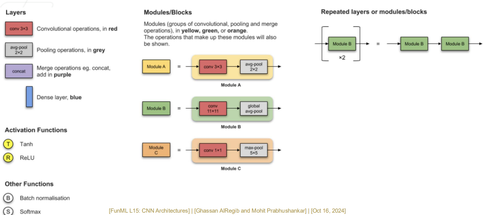
Layers
conv 3x3: Convolution layer with a \(3 \times 3\) kernel.avg-pool 2x2: Average pooling with a \(2 \times 2\) window.concat: Merge operation (concatenation of feature maps).Dense layer: Fully connected layer.
Modules / Blocks
Module A:
conv 3x3followed byavg-pool 2x2.Module B:
conv 1x1followed by global average pooling.Module C:
conv 1x1followed bymax-pool 5x5.
Activation Functions
T (Tanh) and R (ReLU): Common nonlinear activation functions in CNNs.
Other Functions
B (Batch Normalization): Normalizes activations to stabilize and accelerate training.
S (Softmax): Converts final outputs into class probabilities.
4. LeNet
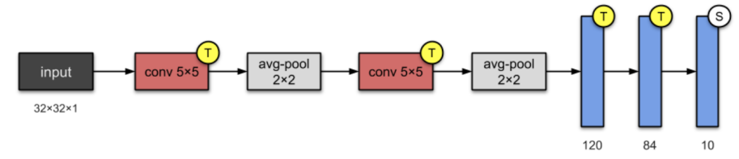
Architecture and Novelty
LeNet-5, introduced in 1998, is one of the earliest successful convolutional neural networks and became the foundation for many modern CNN architectures. The model demonstrated that neural networks could learn directly from raw pixel data, reducing the need for hand-engineered features. Its architecture consists of a sequence of convolutional layers, nonlinear activations, and pooling layers, followed by fully connected layers for classification. Despite its simplicity by modern standards, LeNet achieved strong performance on handwritten digit recognition, reaching an error rate of approximately 0.95% on the MNIST dataset (Lecun et al. 1998).
Pros and Cons
LeNet achieved state-of-the-art performance on handwritten digit recognition and proved that CNNs could handle small distortions, translations, and scale variations in grayscale images. The architecture also generalized well to other small datasets and established the basic CNN design pattern still used today. However, LeNet struggled with more complex image datasets, particularly color images, and its performance was constrained by the limited computational resources and dataset sizes available at the time.
Long Gap (1998–2012)
Between the success of LeNet in the late 1990s and the resurgence of CNNs in 2012, progress in deep convolutional models slowed significantly. The primary limitation was computational power: hardware accelerators were not yet capable of efficiently training deep, multi-layer CNNs with millions of parameters. At the same time, large labeled datasets were scarce, as storage capacity and data collection technologies were still limited. In addition, many of the training techniques that make modern deep learning possible—such as improved parameter initialization, effective variants of stochastic gradient descent, and strong regularization methods—were not yet well established. These challenges prevented CNNs from scaling to complex real-world image recognition tasks until the combination of GPUs, large datasets, and improved training methods became available (AlRegib and Prabhushankar 2024).
5. Vanishing Gradient Problem
Interactive Notebook: Section 5 — Vanishing Gradient Problem
See how gradient magnitudes shrink through deep networks for different activation functions. Toggle activations and adjust depth to observe vanishing vs stable gradients.
Training very deep neural networks was historically difficult due to the vanishing gradient problem. When activation functions such as sigmoid or tanh are used, their derivatives are bounded between 0 and 1. During backpropagation, gradients are repeatedly multiplied across many layers, causing them to shrink exponentially as depth increases. As a result, early layers receive extremely small gradient updates, making learning slow or ineffective.
Several key innovations helped address this challenge. The ReLU (Rectified Linear Unit) activation function maintains stronger gradients and significantly improves optimization in deep networks. Residual connections, introduced in ResNet, allow gradients to flow directly through shortcut paths, enabling the successful training of much deeper architectures. In addition, normalization techniques such as batch normalization stabilize the distribution of activations during training, further improving convergence and performance (Krizhevsky, Sutskever, and Hinton 2012; He et al. 2015, 2015; AlRegib and Prabhushankar 2024).
6. AlexNet
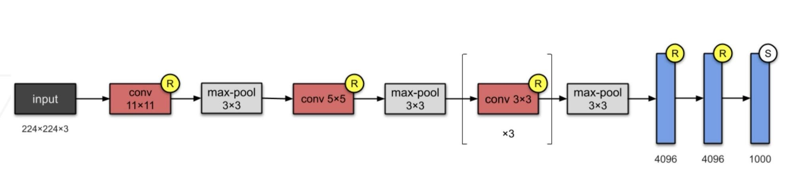
6.1 Novel Features
AlexNet marked a major breakthrough in deep learning and computer vision, winning the ImageNet Large Scale Visual Recognition Challenge (ILSVRC) in 2012 by a large margin. The architecture popularized the use of the ReLU (Rectified Linear Unit) activation function, which significantly improved training speed and helped mitigate the vanishing gradient problem. To reduce overfitting in its large fully connected layers, AlexNet introduced dropout regularization, while Local Response Normalization (LRN) was used to stabilize training. The model was designed specifically for GPU computation, enabling efficient training of a much deeper and wider network than earlier CNNs such as LeNet. In addition, extensive data augmentation was employed to improve generalization on large-scale image datasets. Together, these innovations demonstrated that deep CNNs could achieve state-of-the-art performance on large visual recognition tasks (Krizhevsky, Sutskever, and Hinton 2012).
6.2 Detailed Architecture
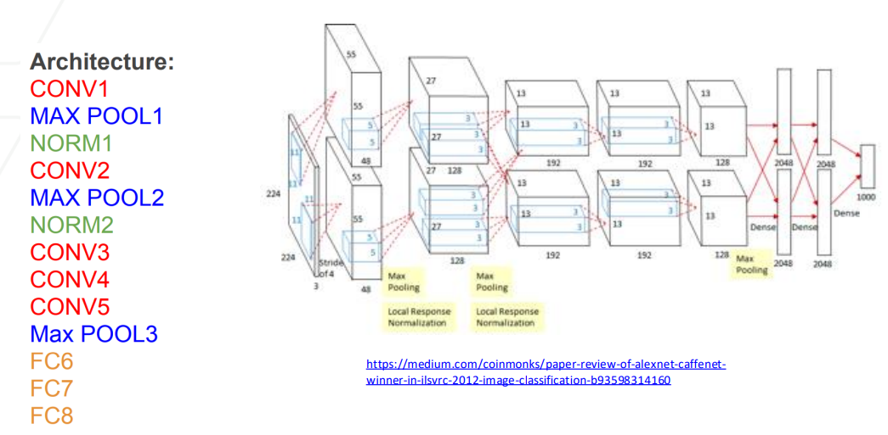
AlexNet consists of five convolutional layers followed by three fully connected layers. The first layer, CONV1, extracts low-level features such as edges and textures, followed by MAX POOL1 to reduce spatial resolution and computational cost. A Local Response Normalization (NORM1) layer is applied to encourage generalization. Subsequent layers CONV2 through CONV5 capture increasingly complex visual patterns, with additional pooling layers (MAX POOL2 and MAX POOL3) further reducing dimensionality. Finally, three fully connected layers (FC6, FC7, and FC8) perform high-level reasoning and output class probabilities.
In addition to its depth, AlexNet introduced several key innovations. It popularized the use of the ReLU activation function, which alleviated vanishing gradients and significantly accelerated training. To combat overfitting, dropout regularization was applied to the fully connected layers. The model also utilized Local Response Normalization (LRN) to stabilize learning and was explicitly designed for GPU computation, enabling large-scale training on ImageNet (Krizhevsky, Sutskever, and Hinton 2012).
6.3 Dropout as a Regularization Technique
Dropout is a powerful regularization technique introduced in AlexNet to reduce overfitting in large neural networks. During training, individual neurons are randomly deactivated (“dropped out”) with a fixed probability, which prevents any single neuron from becoming overly specialized. As a result, the network is forced to learn distributed and redundant feature representations that generalize better to unseen data.
At a conceptual level, dropout can be interpreted as training an ensemble of many smaller subnetworks that share parameters. At test time, the full network is used, producing predictions that approximate averaging over this large ensemble.
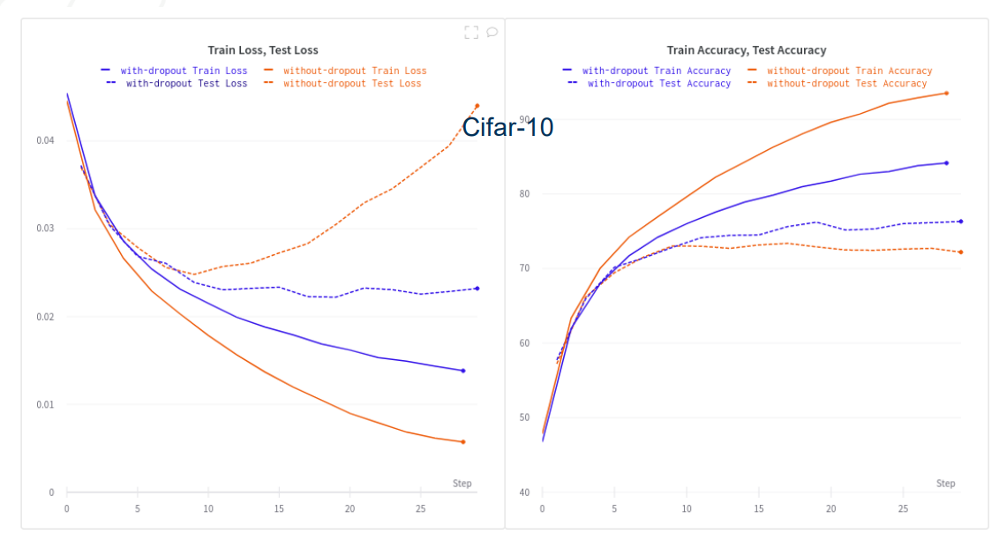
Interactive Notebook: Section 6.3 — Dropout Regularization
Click any hidden neuron to toggle it on/off and simulate dropout. Track the effective dropout rate and see how the active sub-network changes.
In AlexNet, dropout was applied primarily to the fully connected layers, which contain the majority of the model parameters and are most prone to overfitting. This regularization strategy played a major role in AlexNet’s strong performance on large-scale image recognition tasks (Krizhevsky, Sutskever, and Hinton 2012).
6.4 ReLU Activation Function
ReLU (Rectified Linear Unit) represents a major shift in activation function design for deep neural networks and was popularized at large scale by AlexNet. ReLU addresses the vanishing gradient problem that commonly occurs with sigmoid and tanh activations in deep architectures, enabling faster and more stable training (Krizhevsky, Sutskever, and Hinton 2012; AlRegib and Prabhushankar 2024).
6.4.1 Advantages of ReLU
ReLU is a non-saturating activation function, meaning its gradient does not shrink toward zero for positive inputs. This property significantly accelerates optimization compared to traditional sigmoid and tanh activations and allows gradients to propagate more effectively through deep networks.
6.4.2 Performance Comparison
Empirically, training with ReLU has been shown to be up to six times faster on datasets such as CIFAR-10 compared to networks using tanh activations (AlRegib and Prabhushankar 2024). This improvement arises from its piecewise-linear, non-saturating form, which promotes efficient gradient flow during backpropagation.
Interactive Notebook: Section 6.4.2 — Training Dynamics
Train a small neural network on a toy dataset and compare how different activation functions affect convergence speed and final accuracy.
6.4.3 Sigmoid Function
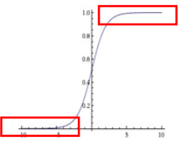
The sigmoid function is a classical activation function widely used in neural networks, particularly in the output layer of binary classification models. It maps real-valued inputs to probabilities in the range \((0,1)\) and is defined as \[\sigma(x) = \frac{1}{1 + e^{-x}}.\] Although useful for probabilistic outputs, sigmoid activations suffer from saturation, which can lead to vanishing gradients in deep networks.
6.4.4 Tanh Function
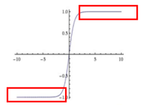
The hyperbolic tangent function (tanh) is another commonly used activation function. Similar to sigmoid, it is smooth and differentiable, but it outputs values in the range \((-1,1)\) and is defined as \[\tanh(x) = \frac{e^x - e^{-x}}{e^x + e^{-x}}.\] Because tanh is zero-centered, it often performs better than sigmoid in hidden layers; however, it still suffers from gradient saturation in deep networks.
6.4.5 ReLU Function
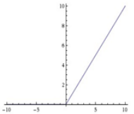
The Rectified Linear Unit (ReLU) has become the default activation function for modern deep neural networks due to its simplicity and computational efficiency. It is defined as \[\text{ReLU}(x) = \max(0, x).\] ReLU mitigates the vanishing gradient problem, enables faster convergence, and typically leads to improved performance in deep architectures because it remains non-saturating for positive inputs.
6.5 Local Response Normalization (LRN)
Local Response Normalization (LRN) is a normalization technique introduced in AlexNet to stabilize training and improve generalization by normalizing neuron responses across nearby feature maps. Although LRN has largely been replaced by Batch Normalization in modern architectures, it played an important role in the early success of deep convolutional networks (Krizhevsky, Sutskever, and Hinton 2012).
LRN is inspired by the concept of lateral inhibition in biological neurons, where strongly activated neurons suppress the activity of their neighbors. In CNNs, this encourages competition between feature maps and helps the network learn more discriminative and robust features.
In convolutional networks, each feature map can be interpreted as a detector for a specific visual pattern (e.g., edges, textures, or object parts). When multiple feature maps respond strongly at the same spatial location, it may indicate redundant or competing representations. LRN introduces competition across channels so that only the most strongly activated features are emphasized, encouraging specialization among filters and improving the diversity of learned representations.
6.5.1 LRN Mechanism
LRN operates across channels at each spatial location \((x,y)\) by normalizing the activation of a neuron using the squared responses of neighboring feature maps. The normalized response is computed as:
\[b_{x,y}^i = \frac{a_{x,y}^i} {\left( k + \alpha \sum_{j=\max(0,i-\frac{n}{2})}^{\min(N-1,i+\frac{n}{2})} \left(a_{x,y}^j\right)^2 \right)^\beta}\]
where:
\(a_{x,y}^i\) is the activation produced by the \(i\)-th kernel at position \((x,y)\) after the ReLU nonlinearity.
\(b_{x,y}^i\) is the normalized activation.
\(N\) is the total number of feature maps in the layer.
\(n\) is the number of neighboring channels used for normalization.
\(k\), \(\alpha\), and \(\beta\) are hyperparameters controlling the strength of normalization.
This formulation is commonly referred to as inter-channel LRN, which was the version used in AlexNet (Krizhevsky, Sutskever, and Hinton 2012).
6.5.2 Intuition and Purpose
LRN encourages neurons with large activations to stand out relative to their neighbors while suppressing uniformly strong responses. This behavior improves generalization and leads to more stable training dynamics.
In practice, LRN enhances strong activations that are significantly larger than nearby responses, making the network more sensitive to distinctive and high-level features. At the same time, it suppresses uniformly large activations that may not carry meaningful information, reducing redundant feature responses. These effects collectively improve model robustness, and in AlexNet they contributed to reduced top-1 and top-5 classification error.
6.5.3 Visualization of LRN in CNNs
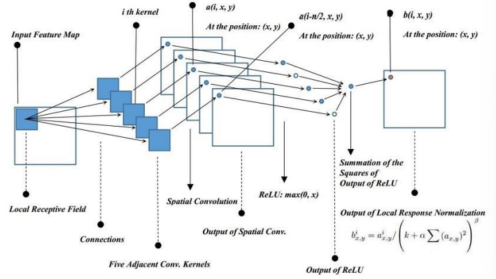
The figure illustrates how activations from neighboring feature maps are combined and normalized at each spatial location.
6.5.4 Toy Example of Inter-Channel Normalization
To better understand LRN, consider a toy example using parameters \(k = 0\), \(\alpha = \beta = 1\), \(n = 2\), and \(N = 4\) channels. Each activation is normalized using the squared responses of its neighboring channels.
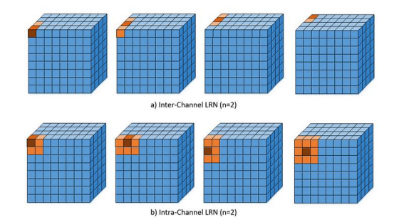
Interactive Notebook: Section 6.5.4 — Inter-Channel Normalization (LRN)
Adjust LRN parameters k, α, β, and window n to see how channel activations are normalized. Observe how large activations are suppressed more than small ones.
Before normalization, neuron activations may vary widely across channels. After applying LRN, activations are scaled to a more balanced range, particularly reducing extremely large responses. This helps prevent any single feature map from dominating the representation and encourages distributed feature learning.
6.5.5 Historical Perspective
Although LRN was an important component of AlexNet, later work showed that Batch Normalization provides stronger and more stable normalization. As a result, LRN is rarely used in modern CNN architectures, but it remains historically significant as an early normalization method that enabled deeper networks to train successfully.
6.6 Overview of AlexNet Achievements
AlexNet marked a turning point in the history of deep learning by winning the ImageNet Large Scale Visual Recognition Challenge (ILSVRC) in 2012 by a wide margin (Krizhevsky, Sutskever, and Hinton 2012). Its success demonstrated that deep convolutional neural networks could dramatically outperform traditional computer vision methods when trained at large scale with modern hardware.
6.6.1 ImageNet Classification Error Rate
One of AlexNet’s most striking achievements was its dramatic reduction of the top-5 classification error on ImageNet. In the 2012 ILSVRC competition, AlexNet achieved a top-5 error rate of 16.4%, compared to approximately 26% from the best performing method the year before. This nearly 10% absolute improvement shocked the computer vision community and is widely considered the moment that sparked the modern deep learning revolution (Krizhevsky, Sutskever, and Hinton 2012; AlRegib and Prabhushankar 2024).
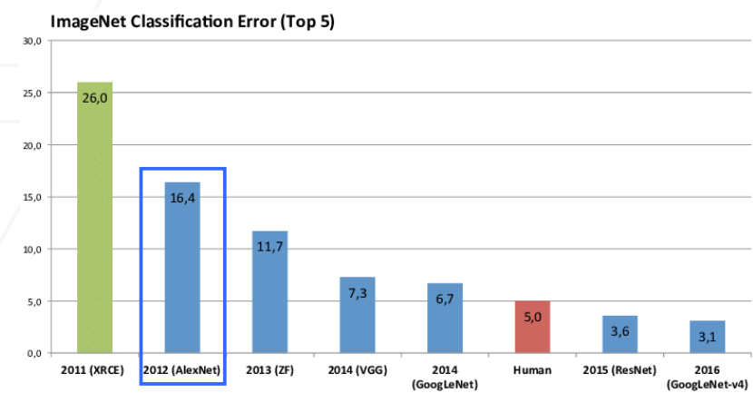
6.6.2 Key Innovations Behind AlexNet
AlexNet’s success was not due to a single breakthrough, but rather the combination of several innovations working together. First, the use of a deep convolutional architecture enabled hierarchical feature learning, allowing the network to automatically discover increasingly complex visual representations across layers. The introduction of ReLU activations significantly accelerated training by mitigating the vanishing gradient problem, making it feasible to train deeper networks efficiently.
To improve generalization, AlexNet incorporated dropout regularization, which reduced overfitting in the large fully connected layers by preventing co-adaptation of neurons. In addition, extensive data augmentation — including image translations, horizontal flips, and color jittering — expanded the effective training dataset and improved robustness to visual variations. Finally, GPU-based training enabled the massive computational speedups required to train such a deep network on the large-scale ImageNet dataset.
Together, these ideas established the blueprint for modern convolutional neural networks and reshaped the direction of deep learning research.
6.6.3 The ImageNet Challenge
The ImageNet dataset was a key enabler of AlexNet’s success. It contains over 1.2 million training images across 1000 object categories, along with large validation and test sets (Krizhevsky, Sutskever, and Hinton 2012; AlRegib and Prabhushankar 2024). The scale and diversity of this dataset made it one of the most challenging benchmarks in computer vision and provided the data necessary to train deep neural networks effectively.
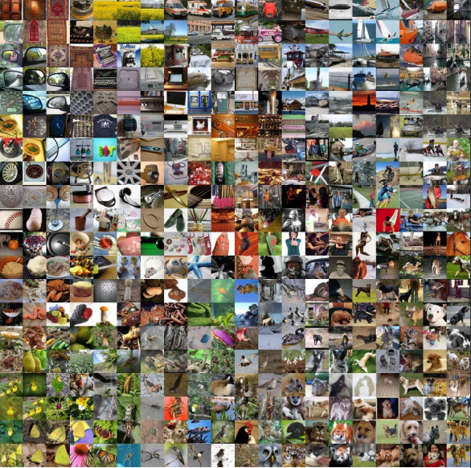
6.7 AlexNet’s Advantages and Disadvantages
6.7.1 Advantages and Disadvantages of AlexNet
6.7.1.1 Pros.
AlexNet achieved breakthrough performance by dramatically reducing ImageNet error rates and demonstrating the practical power of deep convolutional neural networks. It was among the first large-scale models to leverage GPU parallelism, making training deep CNNs feasible at ImageNet scale. The architecture introduced several influential innovations, including deep convolutional stacks, ReLU activations, dropout regularization, and data augmentation, which together improved learning and generalization. As a result, AlexNet established a modern CNN blueprint that shaped nearly all subsequent convolutional architectures.
6.7.1.2 Cons.
Despite its success, AlexNet contains a large number of parameters (around 60 million), making it computationally expensive and memory-intensive. The heavy use of fully connected layers significantly increased parameter count and risk of overfitting. While deep for its time, AlexNet has limited depth by modern standards compared to architectures such as VGG, ResNet, and Transformers. Consequently, it is now considered inefficient by today’s standards, as later models achieve better accuracy with fewer parameters and improved training stability.
6.8 Impact and Legacy
The success of AlexNet marked a turning point in the history of computer vision and deep learning. Its performance in the 2012 ImageNet Large Scale Visual Recognition Challenge demonstrated, for the first time at scale, that deep convolutional neural networks could dramatically outperform traditional computer vision pipelines based on handcrafted features.
AlexNet helped shift the field away from manually designed feature extraction methods toward end-to-end learning from raw data. Following its success, deep learning rapidly became the dominant paradigm in computer vision and began expanding into speech recognition, natural language processing, robotics, and many other domains.
The architectural ideas introduced in AlexNet—deep convolutional networks, ReLU activations, dropout regularization, data augmentation, and large-scale GPU training—became foundational components of modern neural network design. Subsequent architectures such as VGG, GoogLeNet, and ResNet built directly upon these ideas, leading to the deep learning era that continues to shape artificial intelligence today.
7. VGG
VGG stands for the Visual Geometry Group at the University of Oxford. VGGNet is a deep Convolutional Neural Network (CNN) architecture that emphasized the importance of network depth and architectural simplicity. The most well-known variants, VGG-16 and VGG-19, contain 16 and 19 learnable weight layers (convolutional and fully connected layers).
Unlike AlexNet, which introduced several innovations simultaneously, VGG focused on understanding how increasing depth alone affects performance. The model demonstrated that significantly deeper networks could achieve higher accuracy on large-scale image recognition tasks such as ImageNet. Despite being computationally expensive, VGG remains highly influential and is still widely used as a backbone for many modern computer vision models (Simonyan and Zisserman 2015).
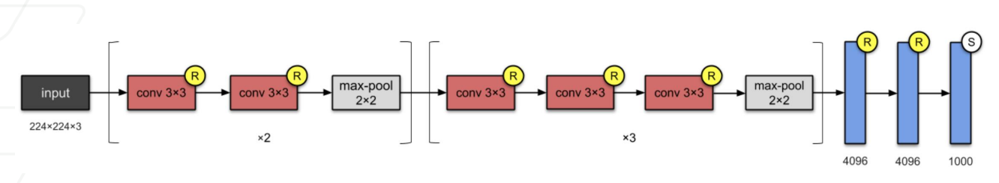
7.1 Key Ideas and Novelty of VGG
VGG systematically investigated the effect of network depth on recognition accuracy. While AlexNet contained 8 learnable layers, VGG introduced significantly deeper architectures ranging from 11 to 19 layers. This work demonstrated that increasing depth leads to stronger hierarchical feature representations and improved performance on large-scale image recognition tasks.
A key design choice in VGG is the consistent use of small \(3\times3\) convolution filters instead of large kernels (such as \(7\times7\) or \(11\times11\)). Rather than using one large convolution, VGG stacks multiple small convolutions. This strategy achieves the same effective receptive field while using fewer parameters and adding additional nonlinearities, which improves representation power and learning capacity.
For example, stacking two \(3\times3\) convolution layers has the same receptive field as a single \(5\times5\) convolution, but requires fewer parameters and introduces an extra nonlinearity, leading to more expressive models (Simonyan and Zisserman 2015).
7.2 ImageNet Classification Error (VGG)
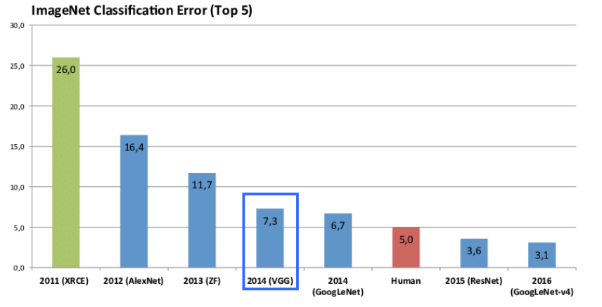
VGG, introduced in 2014, achieved a significant reduction in top-5 error to 7.3%, improving upon the previous year’s 11.7% achieved by the ZF (Zeiler & Fergus) model (Simonyan and Zisserman 2015; AlRegib and Prabhushankar 2024). This substantial drop demonstrated that increasing depth alone—when carefully designed—can lead to meaningful performance gains.
The results validated the hypothesis that deeper architectures produce stronger hierarchical representations and set the stage for even deeper networks such as GoogLeNet and ResNet.
7.3 VGG Network (2014)
7.3.1 Introduction to VGG
The VGG (Visual Geometry Group) network, introduced in 2014, is known for its simple and uniform design and for demonstrating the power of depth in convolutional neural networks. VGG uses stacks of small \(3\times3\) convolution filters to increase network depth while keeping the number of parameters manageable.
7.3.2 Architecture Details
Convolution Blocks: VGG is built from repeated blocks of multiple \(3\times3\) convolution layers followed by a pooling layer. All convolutions use stride \(1\) and padding to preserve spatial resolution.
Max Pooling: After each convolution block, a \(2\times2\) max-pooling layer with stride \(2\) halves the spatial resolution, gradually reducing feature map size.
Increasing Depth: VGG networks range from VGG-16 to VGG-19, where deeper versions simply add more convolution layers within each block.
Classifier: The convolutional feature extractor is followed by three fully connected layers (4096–4096–1000) used for ImageNet classification.
7.3.3 Stacking Convolution Layers
One of the most important design choices in VGG is the use of stacked \(3\times3\) convolution layers instead of a single large convolution filter. VGG showed that stacking multiple small filters can achieve the same effective receptive field as a larger filter while providing several important advantages.
For example, stacking three \(3\times3\) convolutions produces the same receptive field as a single \(7\times7\) convolution. However, the stacked design requires significantly fewer parameters and introduces additional nonlinearities between layers.
For a layer with \(C\) input and output channels: \[\text{Stacked }3\times3\text{ filters: } 3 \times (3^2 C^2) \qquad \text{vs.} \qquad \text{Single }7\times7\text{ filter: } 7^2 C^2\]
This results in:
Fewer parameters
More nonlinear activation functions
Greater representational power
By increasing depth while controlling parameter growth, VGG demonstrated that deeper networks can learn more complex and hierarchical visual features without dramatically increasing computational cost.
7.3.4 Comparison with Other Models
VGG was among the first architectures to demonstrate the strong benefits of depth in convolutional neural networks. Its success influenced many later architectures, including GoogLeNet and ResNet, which introduced new strategies for improving training stability and computational efficiency in even deeper networks.
VGG therefore represents an important milestone in the evolution of modern CNN design.
7.3.5 Visual Representation
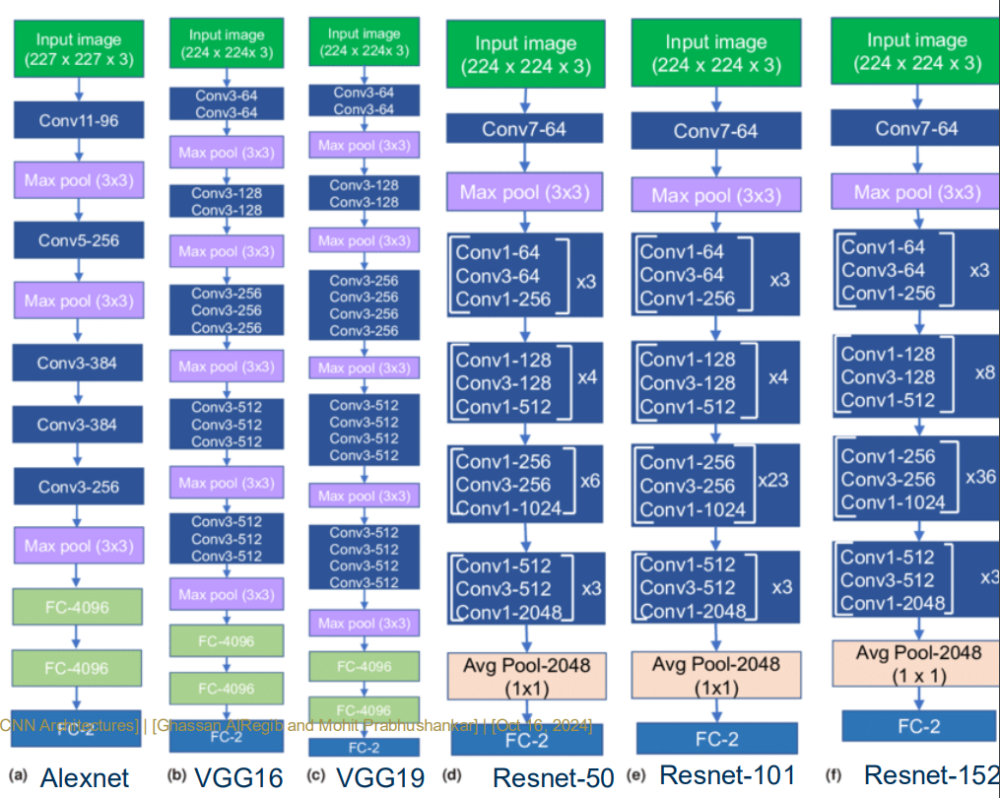
7.4 Advantages and Disadvantages of VGG
7.4.0.1 Pros.
VGG is known for its simple and uniform design, built from repeated stacks of \(3\times3\) convolutional layers. This consistent structure makes the network easy to understand, modify, and extend. Increasing depth allows VGG to learn rich hierarchical feature representations, which significantly improved image recognition accuracy compared to earlier CNN architectures. Furthermore, stacking multiple small kernels introduces additional nonlinearities through repeated ReLU activations, improving the network’s ability to model complex patterns. Using small kernels also provides better parameter efficiency than large kernels, achieving the same receptive field while using fewer parameters than \(7\times7\) or \(11\times11\) convolutions.
7.4.0.2 Cons.
Despite its conceptual simplicity, VGG contains a very large number of parameters (approximately 138 million), largely due to its fully connected layers, making it memory-intensive and difficult to deploy on resource-limited systems (Simonyan and Zisserman 2015; AlRegib and Prabhushankar 2024). The large depth also results in high computational cost, leading to slower training and inference compared to modern architectures. Training very deep VGG networks can suffer from vanishing gradient challenges, which later architectures addressed using residual connections. As a result, more recent models such as ResNet achieve faster training and better performance with more efficient designs.
8. GoogLeNet (Inception V1)
GoogLeNet, also known as Inception V1, was introduced by researchers at Google in the 2014 paper “Going Deeper with Convolutions.” The model won the ILSVRC 2014 image classification challenge and represented a major shift from earlier architectures such as AlexNet and ZF-Net. Instead of simply increasing depth and parameter count, GoogLeNet focused on improving computational efficiency while enabling significantly deeper networks. The architecture introduced several new design ideas, including \(1\times1\) convolutions, Inception modules, and global average pooling (Szegedy et al. 2014).
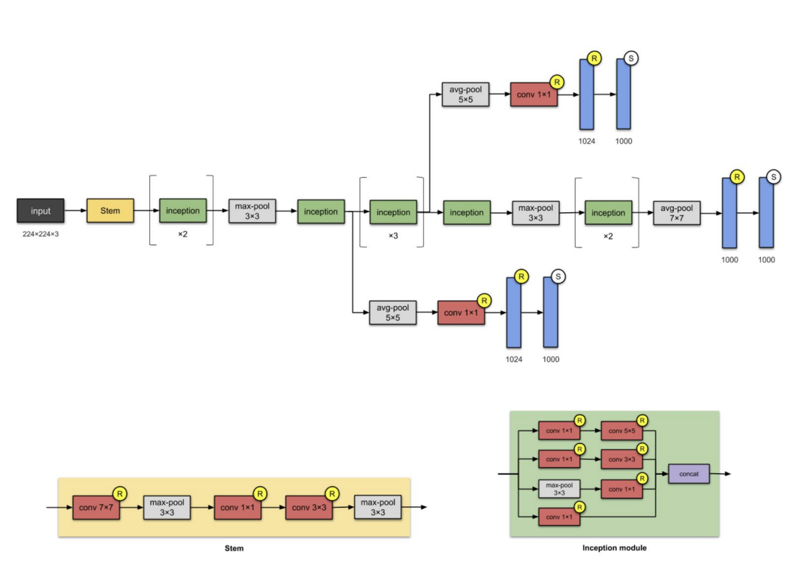
8.1 Key Innovations of GoogLeNet
One of the most important contributions of GoogLeNet is the Network-in-Network idea, implemented through the Inception module. Instead of applying a single convolution at each layer, the Inception module performs multiple convolutions in parallel using different kernel sizes (such as \(1\times1\), \(3\times3\), and \(5\times5\)), along with pooling operations. The outputs of these parallel operations are concatenated, allowing the network to capture features at multiple spatial scales simultaneously.
A key component that enables this design is the use of \(1\times1\) convolutions. These layers act as bottleneck layers that reduce the number of channels before applying larger convolutions. This dramatically lowers computational cost and memory usage while preserving representational power.
GoogLeNet also improves training efficiency through the use of Batch Normalization, which stabilizes gradient flow and accelerates convergence. Additionally, the network replaces traditional fully connected layers with global average pooling at the final stage. This design reduces the number of parameters, decreases overfitting, and makes the architecture more computationally efficient.
Another notable feature is the introduction of auxiliary classifiers. These are small intermediate classifiers attached to earlier layers of the network. They provide additional gradient signals during training, helping to mitigate the vanishing gradient problem and improving optimization in very deep networks (Szegedy et al. 2014).
8.2 Inception Module
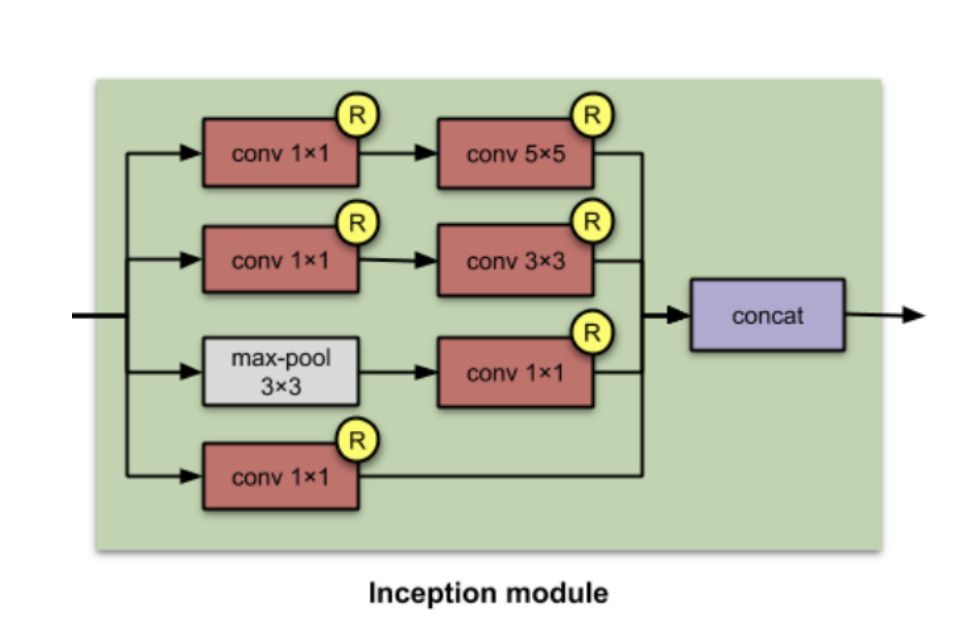
The Inception module is the fundamental building block of GoogLeNet. The full network is constructed by stacking multiple Inception modules, each designed to capture visual features at multiple spatial scales while maintaining computational efficiency.
Unlike traditional convolutional layers that apply a single filter size, the Inception module performs multiple operations in parallel, including \(1\times1\), \(3\times3\), and \(5\times5\) convolutions, along with pooling. The outputs of these parallel branches are then concatenated along the channel dimension. This design enables multi-scale feature extraction, allowing the network to capture both local and global patterns simultaneously.
A key innovation that makes this architecture computationally feasible is the use of \(1\times1\) convolutional bottleneck layers. These layers are applied before larger convolutions to reduce the number of input channels, dramatically lowering the number of parameters and computations required. As a result, the model can increase depth and width without excessive computational cost.
Overall, the Inception module provides several advantages over traditional CNN designs. By combining filters of different sizes within a single layer, it improves representational power while remaining parameter-efficient. The use of bottleneck layers and global pooling further reduces overfitting and model complexity. Empirically, networks built with Inception modules achieved strong performance on large-scale image classification benchmarks (Szegedy et al. 2014).
8.3 Batch Normalization
Batch Normalization (BN) is a technique for stabilizing and accelerating the training of deep neural networks. It operates by normalizing the inputs to a layer across each mini-batch, thereby reducing the variation in intermediate activations during training. This improves gradient flow, enables the use of larger learning rates, and typically reduces the number of training epochs required for convergence (AlRegib and Prabhushankar 2024).
Given a mini-batch \(B = \{x_1, \dots, x_m\}\) of activations for a particular neuron or feature channel, Batch Normalization performs the following transformation.
8.3.0.1 Batch Normalizing Transform
Step 1: Compute mini-batch statistics \[\mu_B = \frac{1}{m} \sum_{i=1}^{m} x_i,
\qquad
\sigma_B^2 = \frac{1}{m} \sum_{i=1}^{m} (x_i - \mu_B)^2.\]
Step 2: Normalize \[\hat{x}_i = \frac{x_i - \mu_B}{\sqrt{\sigma_B^2 +
\epsilon}},\] where \(\epsilon\)
is a small constant added for numerical stability.
Step 3: Scale and shift \[y_i = \gamma \hat{x}_i + \beta.\]
Here, \(\gamma\) and \(\beta\) are learnable parameters that allow the network to adjust the normalized representation. In particular, they enable the model to recover the original distribution if normalization is not beneficial for a given layer.
The Batch Normalization transformation is applied before the activation function, ensuring that normalized inputs are passed into the nonlinearity.
Interactive Notebook: Section 8.3.0.1 — Batch Normalizing Transform
Adjust batch size, γ (scale), β (shift), and ε to see the three-step BN transform: compute statistics, normalize, then scale and shift.
8.3.0.2 Local Response Normalization vs. Batch Normalization
Local Response Normalization (LRN), used in early architectures such as
AlexNet, normalizes activations across neighboring feature channels. It
is a fixed, non-trainable operation designed to encourage competition
between adjacent filters.
Batch Normalization differs fundamentally in both mechanism and purpose. Rather than normalizing across channels, BN normalizes across examples within a mini-batch. It introduces trainable parameters (\(\gamma\), \(\beta\)), allowing the network to learn the appropriate scaling and shifting of activations. Originally motivated by reducing internal covariate shift, Batch Normalization is now understood to improve optimization dynamics and smooth the loss landscape. Due to its effectiveness, BN has largely replaced LRN in modern deep architectures (AlRegib and Prabhushankar 2024).
8.4 Advantages and Disadvantages of GoogleNet
8.4.0.1 Pros.
A major advantage of GoogLeNet is its reduced computational cost. Through the use of Inception modules, \(1\times1\) bottleneck convolutions, and global average pooling, the architecture dramatically reduces the number of parameters from roughly 138 million (as in VGG) to about 4 million while still achieving strong performance (Szegedy et al. 2014; AlRegib and Prabhushankar 2024).
8.4.0.2 Cons.
Despite its efficiency, GoogLeNet introduces a more heterogeneous topology, where each module may require careful customization. This makes the architecture less uniform and more complex to implement and optimize. Additionally, the use of aggressive dimensionality reduction through \(1\times1\) convolutions can create a representation bottleneck, potentially discarding useful feature information if the compression is too strong.
9. ResNet
A Residual Neural Network (ResNet) is a deep learning architecture in which layers are designed to learn residual functions with respect to their inputs. ResNet was introduced in 2015 and won the ILSVRC image classification challenge, demonstrating that extremely deep neural networks can be trained effectively.
One of the key challenges in training very deep networks is the vanishing and exploding gradient problem. As networks become deeper, gradients may shrink or grow uncontrollably, making optimization difficult. ResNet addresses this issue by introducing residual blocks with skip (shortcut) connections. These connections allow information and gradients to flow directly across multiple layers, enabling stable training of very deep architectures (He et al. 2015).
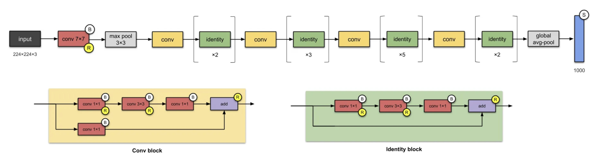
Within a residual block, the input \(x\) is passed through a sequence of weight layers to produce a transformation \(F(x)\). Instead of learning a direct mapping \(H(x)\), the network learns a residual mapping such that the block outputs
\[y = F(x) + x .\]
The shortcut connection adds the original input directly to the transformed output. This identity mapping enables gradients to propagate through the network without vanishing, allowing much deeper models to be trained successfully (He et al. 2015).
Interactive Notebook: Section 9.1 — Residual Connections
Compare gradient flow in plain vs residual networks. Vary depth and weight scale to see how skip connections prevent vanishing gradients.
9.1 Novelty of ResNet
9.1.0.1 Residual Learning.
ResNet introduces residual blocks that learn identity mappings through shortcut connections. Instead of forcing stacked layers to directly learn a desired transformation, the network learns the residual \(F(x)\) that must be added to the input. This design greatly improves gradient flow and makes the optimization of very deep networks significantly easier.
9.1.0.2 Enabling Extremely Deep Networks.
ResNet demonstrated that neural networks can be trained at unprecedented depth (50, 101, and even 152 layers) while maintaining strong generalization (He et al. 2015). Compared to earlier architectures such as AlexNet and VGG, ResNet achieves greater depth with improved computational efficiency and superior performance on large-scale visual recognition tasks.
9.2 ImageNet Classification Error (ResNet)
ResNet marked a major milestone in the ImageNet Large Scale Visual Recognition Challenge (ILSVRC). Introduced in 2015, the architecture achieved a top-5 classification error of approximately 3.6%, surpassing the estimated human-level performance of about 5% (He et al. 2015). This result demonstrated that very deep neural networks could achieve unprecedented accuracy when the optimization challenges of depth are properly addressed.
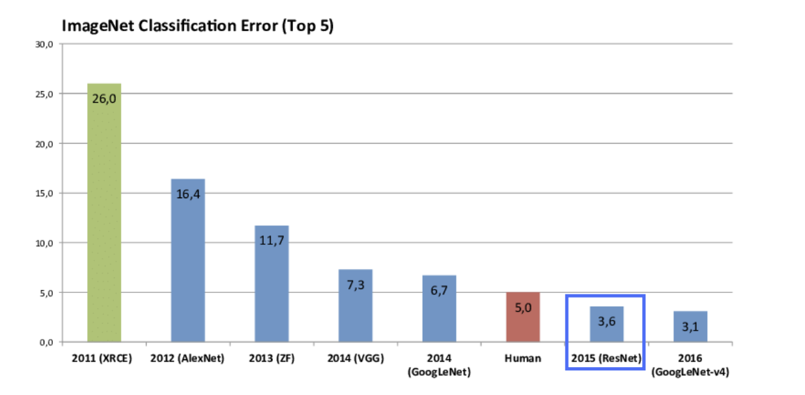
The figure illustrates the rapid reduction in classification error across successive CNN architectures. Starting from early shallow networks, performance improved steadily with the introduction of AlexNet, VGG, and GoogleNet. However, the introduction of residual learning produced a particularly sharp improvement, pushing performance beyond the previously assumed limits of very deep networks.
A key factor behind this progress is the ability of ResNet to successfully train extremely deep architectures. While earlier models typically contained fewer than 20 layers, ResNet demonstrated stable training with over 150 layers (He et al. 2015). This enabled the network to learn significantly richer hierarchical feature representations.
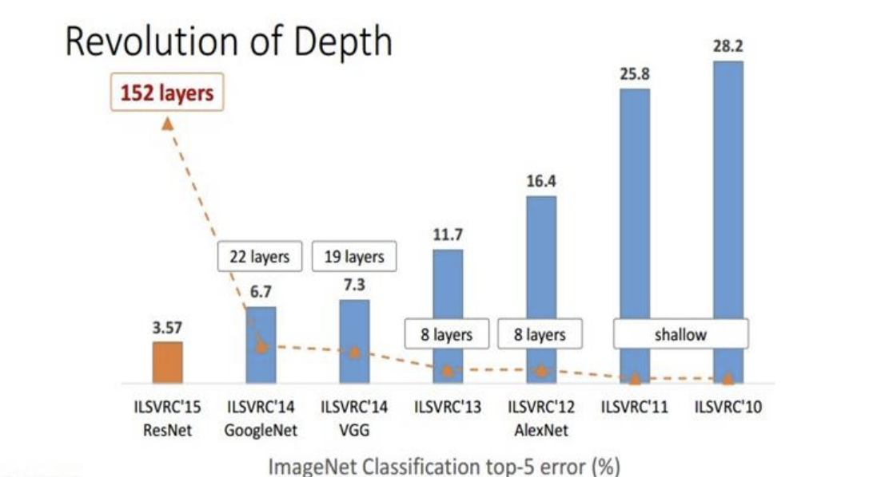
Together, these results highlight a turning point in deep learning: depth alone was not the limiting factor—rather, the key challenge was optimization. By enabling effective training of very deep networks, ResNet established a new benchmark and influenced nearly all modern computer vision architectures.
9.3 Comparison with Other Network Architectures for ImageNet
Figure 28 compares the VGG-19 architecture, a plain 34-layer convolutional network, and a 34-layer residual network. The residual network is obtained by inserting shortcut (skip) connections into the plain network, allowing the model to learn residual mappings instead of directly learning the desired underlying transformation.
When the input and output feature maps have the same spatial and channel dimensions, an identity shortcut can be used. In this case, the input is added directly to the output of the stacked convolutional layers without introducing additional parameters (solid shortcuts in the figure).
When the feature map dimensions increase, the shortcut connection must be modified to match dimensions (dotted shortcuts in the figure). Two common strategies are used:
Option A: Zero-padding identity shortcut. The shortcut still performs identity mapping, but extra zero entries are padded along the channel dimension to match the increased feature size. This introduces no additional learnable parameters.
Option B: Projection shortcut. A \(1\times1\) convolution is applied to the shortcut path to match the spatial resolution and number of channels. This introduces additional parameters but improves flexibility and performance.
In both cases, when shortcuts connect feature maps of different spatial resolution, they typically use a stride of 2 to perform downsampling.
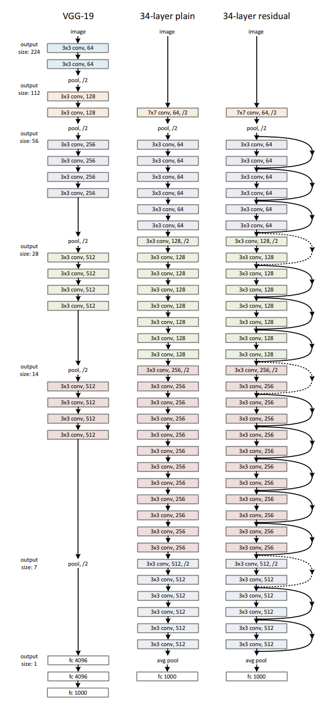
9.4 Advantages and Disadvantages of ResNet
9.4.0.1 Pros.
A major advantage of ResNet is its training efficiency and scalability. By introducing residual connections, the network can learn residual mappings instead of full transformations, which simplifies optimization and enables the successful training of extremely deep architectures. This allows models to converge faster and achieve higher accuracy compared to earlier deep CNNs.
ResNet also provides an effective solution to the vanishing gradient problem. The shortcut connections allow gradients to flow directly through the network during backpropagation, preventing degradation in very deep models and enabling networks with hundreds of layers to be trained reliably.
9.4.0.2 Cons.
Despite its strong performance, ResNet introduces increased architectural complexity compared to earlier CNNs such as AlexNet or VGG. The use of residual blocks and multiple shortcut paths makes the network harder to design, debug, and interpret.
Additionally, very deep ResNet models can still be computationally expensive in terms of memory usage and training time, particularly for large-scale datasets. While more efficient than plain deep networks, they still require substantial computational resources.